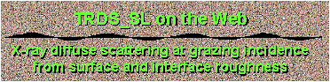
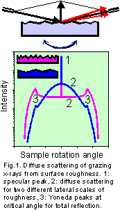
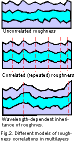
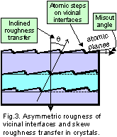

|  |
|---|
| |
|---|
|  |
|---|
| |
|---|
|  |
|---|
This page is a CGI interface to my program TRDS_sl simulating
non-specular x-ray scattering from multilayers with interface roughness. The
basic ideas of this field are formulated in the famous work by Sinha et al
[1]. The angular pattern of non-specular scattering
is related with the Fourier transform of roughness spectrum (Fig.1).
Therefore, the measurements can bring the correlation function of statistical
roughness distribution. In recent years this technique has found widespread
applications in the studies of roughness inheritance and interface-interface
correlations in multilayers [2-12] (Fig.2). These
measurements are especially valuable for semiconductor multilayers where the
roughness anysotropy, the skew roughness correlations between interfaces, and
the distributions of atomic steps on vicinal interfaces can be investigated
[13-18] (Fig.3).
TRDS_sl implements a number of different models or roughness in multilayers
suggested by different authors. These include wavelength-dependent and
asymmetric roughness correlations between different interfaces and roughness
due to atomic steps on vicinal interfaces. The diffuse scattering is calculated
in the distorted-wave Born approximation (DWBA) with the wavefields of non-rough
reflector provided by TER_sl. The calculations
are for coplanar scheme of measurements (Fig.1) most often used in the experiments.
(the scattered radiation is integrated over the deviations from the reflection
planes). The differential schemes [9,10] with out-of-plane
resolution are not supported by this version of the program.
References
- S.K.Sinha, E.B.Sirota, S.Garoff, and H.B.Stanley,
"X-ray and neutron scattering from rough surfaces",
Phys. Rev. B, 38 (1988) 2297-2311.
- A.V.Andreev, A.G.Michette, and A.Renwick,
"Reflectivity and roughness of X-ray multilayer mirrors. Specular
reflection and angular spectrum of scattered radiation",
J. Modern Optics, 35 (1988) 1667-1687.
- V.Holy, J.Kubena and I.Ohlidal, K.Lischka, and W.Plotz,
"X-ray reflection from rough layered systems",
Phys. Rev. B, 47 (1993) 15896.
- Z.H.Ming, A.Krol, Y.L.Soo, Y.H.Kao, J.S.Park, and K.L.Wang,
"Microscopic structure of interfaces in Si1-x Gex /Si
heterostructures and superlattices studied by x-ray scattering and fluorescence
yield",
Phys. Rev. B, 47 (1993) 16373-16381.
- Y.H.Phang, D.E.Savage, R.Kariotis, and M.G.Lagally,
"X-ray diffraction measurement of partially correlated
interfacial roughness in multilayers",
J.Appl.Phys., 74 (1993) 3181-3188.
- E.Spiller, D.Stearns, and M.Krumrey,
"Multilayer x-ray mirrors: Interfacial roughness, scattering, and
image quality",
J. Appl. Phys., 74 (1993) 107-118.
- S.K.Sinha,
"X-ray diffuse scattering as a probe for thin film and interface
structure",
J. Phys. III France, 4 (1994) 1543-1557.
- V.Holy and T.Baumbach,
"Nonspecular x-ray reflection from rough multilayers",
Phys. Rev. B, 49 (1994) 10669.
- T.Salditt, T.H.Metzger and J.Peisl,
"Kinetic roughness of amorphous multilayers studied by diffuse x-ray
scattering",
Phys. Rev. Lett., 73 (1994) 2228-2231.
- R.Paniago, H.Homma, P.C.Chow, S.C.Moss, Z.Barnea, S.S.P.Parkin, and D.Cookson,
"X-ray diffuse-scattering study of interfacial morphology and conformal
roughness in metallic multilayers",
Phys. Rev. B, 52 (1995) 17052-17055.
- V.M.Kaganer, S.A.Stepanov and R.Koehler,
"Bragg-diffraction
peaks in x-ray diffuse scattering from multilayers with rough interfaces",
Phys. Rev. B, 52 (1995) 16369-16372.
- B.Jenichen, S.A.Stepanov, B.Brar and H.Kroemer,
"Interface
roughness of InAs/AlSb superlattices investigated by x-ray scattering",
J. Appl. Phys., 79, (1996) 120-124.
- T.A.Rabedeau, I.M.Tidswell, P.S.Pershan, J.Bevk and B.S.Freer,
"X-ray reflectivity studies of SiO2 /Si (001)",
Appl. Phys. Lett., 59 (1991) 3422-3424.
- R.L.Headrick and J.-M.Baribeau,
"Correlated roughness in (Gem /Sin )p
superlattices on Si(100)",
Phys. Rev. B, 48 (1993) 9174-9177.
- S.K.Sinha, M.K.Sanyal, S.K.Satija, C.F.Majkrzak, D.A.Neumann, H.Homma,
S.Szpala, A.Gibaud, and H.Morkoc,
"X-ray scattering on surface roughness of GaAs/AlAs multilayers",
Physica B, 198 (1994) 72-77.
- Y.H.Phang, C.Teichert, M.G.Lagally, L.J.Peticolos, J.C.Bean and E.Kasper,
"Correlated-interfacial-roughness anisotropy in
Si1-x Gex /Si superlattices",
Phys. Rev. B, 50 (1994) 14435-14445.
- V.Holy, C.Giannini, L.Tapfer, T.Marschner, and W.Stolz,
"Diffuse x-ray reflection from multilayers with stepped interfaces",
Phys. Rev. B, 55 (1997) 9960-9968.
- E.A.Kondrashkina, S.A.Stepanov, R.Opitz, M.Schmidbauer, R.Koehler, R.Hey,
M.Wassermeier, and D.V.Novikov,
"Grazing-incidence
x-ray scattering from stepped interfaces in AlAs/GaAs superlattices",
Phys. Rev. B, 56 (1997) 10469-10482.
- P.R.Pukite, C.S.Lent, and P.I.Cohen,
"Diffraction from stepped surfaces. II. Arbitrary terrace
distributions",
Surface Science, 161 (1985) 39-68.
This short guide provides some explanations on the TRDS_sl
data input and outlines the restrictions of this Web interface.
The TRDS_sl program is executed on my PC, which runs a Web server
under Windows operating system. Since this PC is shared by all of the WEB users
of my x-ray library, please, avoid overloading the server
by running multiple tasks at the same time.
To obtain the results from TRDS_sl you need to fill out the input form
and click on the SUBMIT button. If your input is correct, the results will be
presented as a figure (a curve or a contour plot) and a reference to ZIPped
data file for downloading. Otherwise, an error report will be returned.
The specification of x-rays and crystal substrate should not cause any problems.
The program can use the X0h database for
automatic calculation of the scattering and absorption factors in the media.
The rms roughness height is specified individually for each layer in the
surface profile (see below). The vertical and horizontal correlation lengths
of roughness are specified as common for the whole structure. The following
models of roughness can be used:
- Uncorrelated roughness. The roughness of different interfaces is
not correlated (Fig.2a) and each interface is assumed to possess fractal
(self-affine) roughness with the correlation function by Sinha et al [1].
The parameters used for this model are the lateral correlation length
Lh and the fractal dimension parameter j ("jaggedness"):
0.1<j<1 (smaller j cause bad behavior of the cross-section integral and
the restriction of minimum j by 0.1 is used in TRDS_sl as a reasonable
compromise).
- Completely correlated roughness. Same as model-1, but the roughness
of different interfaces assumed to be completely correlated (conformal) -- see
Fig.2b.
- Ming's model -- the model suggested by Ming et al [4]. This describes an intermediate case between model-1 and
model-2. The correlation between roughness of different interfaces decreases
when the distance between them increases. The model assumes that vertical
correlation does not depend on the lateral size of roughness. The parameters
used for this model are Lh, j, and the vertical correlation length
Lv.
- Lagally's model -- a simple model to account for stronger vertical
correlations of roughness with larger lateral size [5].
Here the fractal correlation function by Sinha is used. The correlations of
roughness at each interface are calculated with Lh and the
interface-interface correlations are calculated with a greater lateral
correlation length Lh2. The model also reads Lv and the
fractal parameter j.
- Holy's model -- the model suggested by Holy and Baumbach [8]. This is a complete correlation model, but of different
kind, as compared with model-2. It takes into account that interfaces are
formed successively from the substrate to the surface. Each interface adds
some statistically independent roughness which is assumed in this model to be
completely transferred to all the successive interfaces. Thus, the roughness
is accumulated. The correlation between two interfaces is determined by the
contributions of all the interfaces below the lower one because the roughness
added between the lower and higher interfaces is independent on the roughness
of the lower interface. NOTE: the rms roughness specified for this
model is the incremental roughness. The total roughness at each
interface is calculated by TRDS_sl and it is returned in the listing
file (the file with the TBL extension). The total rms roughness always grows
towards the surface. The parameters used for this model are the lateral
correlation length Lh and the fractal dimension parameter j
("jaggedness").
- Spiller's model -- the model suggested by Spiller, Stearns and
Krumrey [6] and the respective correlation function for
the diffuse scattering simulations is derived in [11].
This model assumes the accumulation of roughness like in Holy's model, but
the roughness added at each interface is not completely inherited by
successive interfaces. The inheritance is the lower the shorter is the
lateral size of roughness (Fig.2c). As a result, the lateral size of total
roughness grows towards the surface even if all the interfaces add roughness
with the same size. NOTE: the rms roughness specified for this model
is the incremental roughness. The total roughness at each interface is
calculated by TRDS_sl and it is returned in the TBL file. The total
rms height may increase or decrease towards the surface depending on whether
the accumulation or "dissociation" of roughness is dominating. This
model requires Lh and Lv. It only works with j=1.
- Pukite's model -- the model developed in [19]
for the scattering from regular atomic steps on vicinal surfaces (see Fig.3).
TRDS_sl combines this model with interface-interface correlations in
the form of Ming et al (see [18] for details). The
calculations use Born approximation instead of DWBA (the Yoneda peaks are not
reproduced). All the steps (or step bunches) are assumed to have the same
height. The input parameters for the model are Lh, Lv
and the surface miscut angle Thetam. NOTE: any rms heights
in the surface profile are ignored by this model because the rms height of
steps is: sigma=Lh*Thetam. However, you can select the
option to add scattering from self-affine roughness to the scattering from
steps.
- Smoothed Pukite's model -- a modification of Pukite's model allowing
a spread of steps (or step bunches) over their height [18].
The mean steps height is assumed to be sigma=Lh*Thetam
and the spread is the sigma of self-affine roughness (specified for each layer).
Since this is rather phenomenological model, the intensity of scattering from
steps is calculated with additional parameter is effective steps height.
This provides the weight of steps contribution when the scattering from steps
is mixed with the scattering from self-affine roughness.
- Pershan's model -- one more modification of Pukite's model suggested
in [13]. While the previous two models assume a geometric
distribution of terraces over their length with the cutoff parameter Lh,
this model assumes regular steps with the mean terrace width Lh and
the terrace width spread Lhspread. Use this model if you
see a periodic peaks over qx on your diffuse scattering pattern.
The specification of surface layer profile is implemented with a simple
script language. A typical example is:
;
!
period=5
t=10 code=GaAs w0=0.8 sigma=2
t=10 code=GaAs x=0.3 code2=AlAs x2=0.7 sigma=2
t=10 code=SiGe rho=0.9 sigma=2
t=10 x0=(5e-4,7e-6) sigma=2
t=10 w0=.5 sigma=2
t=10 w0=0.5
t=10
end period
Here:
- ";" and "!" are the comment signs. The
lines starting with these symbols are ignored and if these symbols are
present at the middle of a line, everything to the right of them is ignored
too.
- "period=" and "end period" mark the
beginning and the end of a periodic group of layers. The maximum of two
enclosed periods is allowed.
- "t=10" is the layer thickness in Angstroms.
NOTE: this is the only parameter of layer which cannot be skipped.
- "code=" is a code of material in the X0h
database. Use this code for automatic calculation of layers x0 (chi
0). For the reference of available codes see the menu for the substrate
or in the box at the right side of the profile input field. Please, be
advised that the codes are case sensitive (while the script keywords are
not).
Alternatively you can specify a valid chemical formula for the code and
the material density ("rho=") in g/cm^3.
If no code is specified, the substrate code is used by default.
- "x=", "code2=", "x2=",
"code3=" are the parameters to specify composite materials and
solid solutions. For example, a structure like Ga0.3Al0.7As
can be specified as: "code=GaAs x=0.3 code2=AlAs", or even shrter:
"x=0.3 code2=AlAs". You can also specify "x2=0.7", but
this is redundant, because the program automatically takes care of the sum of
all "xN" being equal to one (e.g. the input like "x2=0.8"
in the above example would cause the error message). Maximum of 4 codes are
allowed and all of them must be valid ones in the X0h database.
- "x0=" is the layer x-ray susceptibility
chi0. This parameter, when specified, replaces the data given by
the X0h database.
NOTE: x0 comes from the dynamical diffraction
theory. It is related with the parameters delta and eta often
used for reflectivity as: x0=2*(delta+i*eta).
- "w0=" is a Debye-Waller-like factor for x0. It may
be used to correct the x0 value provided by the X0H database:
x0=w0*x0
By default, this factor is equal to one. Unlike usual Debye-Waller
factor, w0 can be greater than one, because it is simply one more
way to specify x0.
- "sigma=" is the rms roughness at the upper layer
interface expressed in Angstroms. The value or this parameter should not
exceed the layer thickness. Also be advised that using of DWBA presumes small
roughness qz*sigma <<1 which usually implies the limit of
sigma < 5-10A. NOTE: for Holy's and Spiller's models the rms of
incremental roughness is used instead of the total rms.
Here is a practical example -- a profile for 20-period AlAs/GaAs superlattice
with 100 Angstroms of GaAs and 70 Angstroms of AlAs in each period; the structure
is covered by additional 200A of GaAs and, finally, there is some 20A amorphous
oxide layer on the surface:
; comments are allowed in any line, but should
; not contain special symbols like '"*?$!@%
;
; Oxide layer:
t=20. w0=0.7 sigma=5
; -- w0=0.7 because of reduced layer density
; Cap layer:
t=200. sigma=3.
; -- when the code is not specified,
; the substrate code (GaAs) is used
; Superlattice:
period=20
t=100. sigma=3.
t=70. code=AlAs sigma=4.
end period
The angle of skew roughness transfer is the parameter shown of Fig.3. This
parameter is not incorporated in the correlation function corresponding to
Spiller's model.
There are two "accelerators" -- the parameters which can increase
the speed of calculation. These work for self-affine roughness models only.
The selection of K(x) instead of exp(K(x))-1 is good for small rms roughness.
For large rms this accelerator can provide underestimated intensity of
diffuse scattering, but the shape of patterns is well preserved. Thus, this
approximation can be used if one is interested in the shape only. In the
"semi-Born" approximation the diffuse scattering is calculated for
transmitted x-ray waves only. This provides the 16-times acceleration, but
the shape of Yoneda peaks is incorrect. So, it can be used for large lateral
correlation lengths where the scattering is concentrated near the specular peak
and remains under experimental background near the Yoneda peaks.
For the rest of parameters you are suggested to follow the common sense. To
ensure that your input was correct, please verify respective listing file --
a file with ".TBL" extension in the ZIPped archive
referred from the TRDS_sl results screen.
To simplify understanding the TRDS_sl interface you are provided the
templates listed below. All the templates link to the same program and
provide the same functionality. They differ by preloaded data to demonstrate
some possible applications of TRDS_sl.
Besides, when submitting the TRDS_sl task, it is possible to check the
progress watching option. The progress watching is obviously more comfortable,
but it might not work with some old Web browsers. Also, it is a bit slower
because of putting an additional load on the network and launching each 5
seconds a watch program on my computer. Welcome to try both of the ways and
choose the most convenient for your needs. However, please note that in the
case of multilayers the TRDS calculations may become very lengthy. Then the
progress watching option is the only way of maintaining connection to the Web
server and thus seeing the results of submitted task.
Here is a tool to retrieve the results of finished jobs if you know the job ID.
Some possible uses of this tool are:
- You started a job with the progress watch option; the server returned
the job ID and began reporting the progress. However, you found that the
calculations would take too long. Then, you may break the connection and retrieve
the data later on with this tool. If the calculations are not finished, the
tool will resume the watch process.
- The data are accidentally deleted from your client computer and you
want another copy of them. In this case you should be aware that results are
usually stored on the server for about one day after respective job is finished.
 New of December-2012:
POST-Method Templates
New of December-2012:
POST-Method Templates